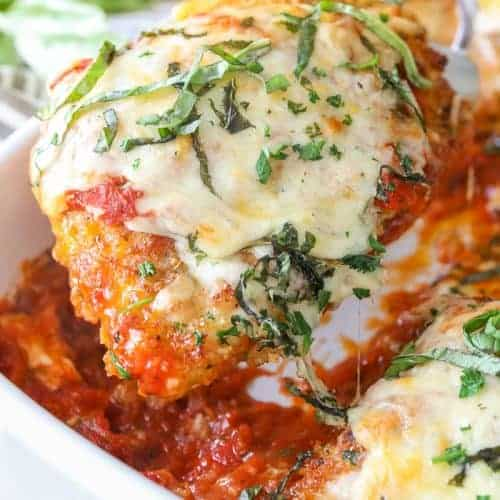
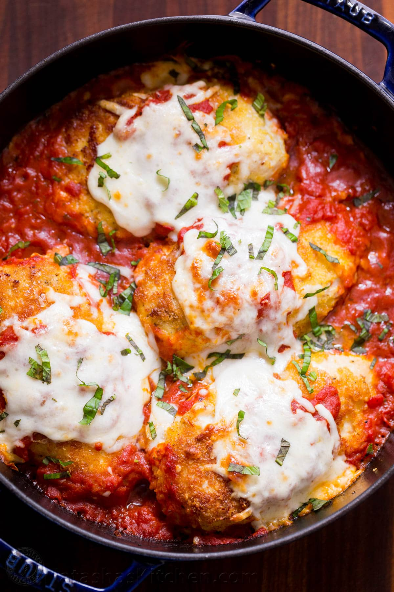

Chicken Parmesan

Recipe
Easy to do, family favorite; Chicken Parmesan Recipe will be ready in 30 mins. It'll have your taste buds watering.
Ingredients
Directions
- Preheat an oven to 425°F.
- Place flour in shallow dish. Place the eggs in a second dish (and beat with a fork).
- Combine Panko, Italian crumbs, grated parmesan, 2 tablespoons fresh parsley, salt and pepper to taste in a third shallow dish.
- Pound chicken breasts to ½" thick (if they're very large you can cut them in half).
- Dip chicken into flour and shake to remove any excess. Dip chicken in beaten eggs & then into bread crumb mixture (press to adhere).
- Preheat oil in a large pan. Brown chicken on each side, about 4 minutes per side or until golden (it does not need to cook through as it will continue to cook in the oven).
- Place 1 ½ cups of marinara sauce in the bottom of a 9x13 dish. Add browned chicken. Top each piece with a couple tablespoons of marinara sauce, mozzarella and parmesan.
- Bake 20-25 minutes or until golden and bubbly and chicken reaches 165°F. Sprinkle with fresh herbs and serve over pasta.
